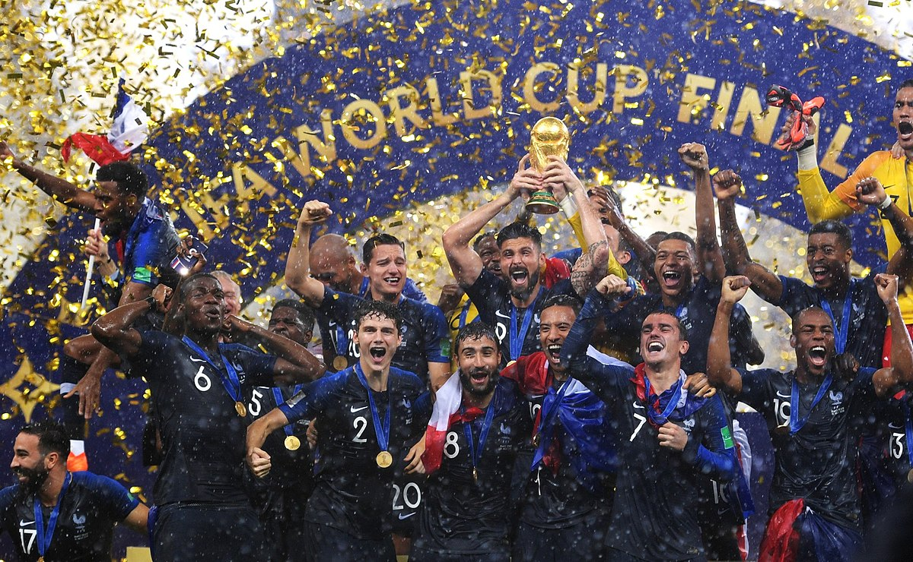

Starożytne początki piłki nożnej
Chińska konkurencyjna gra cuju (蹴鞠) przypomina współczesną federację piłkarską (soccer), opisy pojawiają się w podręczniku wojskowym datowanym na II i III wiek p.n.e. Istniał w czasach dynastii Han i prawdopodobnie dynastii Qin, w drugim i trzecim wieku pne. Japońska wersja cuju to kemari (蹴鞠) i została opracowana w okresie Asuka. Wiadomo, że grano w nią na japońskim dworze cesarskim w Kioto od około 600 rne. W kemari kilka osób stoi w kręgu i kopie do siebie piłkę, starając się, aby piłka nie spadła na ziemię (podobnie jak Keep Uppie).
Wiadomo, że starożytni Grecy i Rzymianie grali w wiele gier w piłkę, z których niektóre wymagały użycia stóp. Uważa się, że rzymska gra harpastum została zaadaptowana z greckiej gry zespołowej znanej jako „ἐπίσκυρος” (Episkyros) lub „φαινίνδα” (phaininda), o której wspomina grecki dramaturg, Antyfanes ( 388-311 p.n.e.), a później wspominany przez chrześcijańskiego teologa Klemensa Aleksandryjskiego (ok. 150 – ok. 215 ne). Wydaje się, że te gry przypominały futbol rugby. Rzymski polityk Cyceron (106–43 pne) opisuje przypadek mężczyzny, który został zabity podczas golenia, gdy piłka została kopnięta w zakładzie fryzjerskim. Rzymskie gry w piłkę znały już piłkę wypełnioną powietrzem, follis. Episkyros jest uznawany przez FIFA za wczesną formę futbolu.
Nowożytna piłka nożna

Nie wiadomo, czy popularne w późnym średniowieczu na Wyspach Brytyjskich gry piłkarskie dotarły z Celtami, Rzymianami, Duńczykami, czy Normanami, można jednak prześledzić ich niesłabnącą popularność od najstarszej notatki sporządzonej między 1174 a 1183 r. W średniowieczu w wielu miastach grano w różne odmiany futbolu ludowego (ang. mob football), jak Royal Shrovetide Football. Grano na ulicach miejskich, a celem było przemieszczenie piłki do wyznaczonego miejsca (najczęściej była to brama miejska). Sport ten nie miał spisanych reguł: cechował się dużą brutalnością, drużyny liczyły nawet po kilkuset zawodników, którzy w czasie gry dewastowali miasto. Z tych powodów sport ten był wielokrotnie zakazywany edyktami królewskimi, kościelnymi i miejskimi. Mimo to futbol ludowy nie tracił na popularności i rozprzestrzenił się na obszarze kolonii brytyjskich. Piłki wtedy często przenoszono w rękach, kopiąc je tylko sporadycznie, a robiono ze zwierzęcych pęcherzy wypełnianych np. słomą.
W XIX wieku Wielka Brytania była centrum rewolucji przemysłowej, co doprowadziło do znaczących zmian cywilizacyjnych. Piłką zaczęto grać na podmiejskich łąkach, doprowadzono do spisania pierwszych reguł. Prym wiodły szkoły publiczne, które uznały, że gry ruchowe mogą pozytywnie wpłynąć na rozwój i dyscyplinę młodzieży. Powstanie kolei sprawiło, że szkoły mogły dużo łatwiej rywalizować ze sobą. Problemem był jednak brak wspólnych zasad rywalizacji. Reguły – zazwyczaj nieliczne – ustalano tuż przed meczem. Najstarsze spisane zasady gry powstały w 1845 r. w szkole w mieście Rugby w środkowej Anglii, od którego wzięła się nazwa całej dyscypliny sportu. Apokryficzna historia przypisuje powstanie gry Williamowi Webbowi Ellisowi w 1823 r., upamiętnionemu m.in. w nazwie Pucharu Świata w rugby union.
Powstanie TFA

Kluczowe dla rozwoju piłki nożnej okazały się reguły spisane w Cambridge w 1848 r. i w Sheffield w 1857 r. Od tego momentu można mówić o stopniowym oddzielaniu się piłki nożnej od rugby. Wówczas narastał też konflikt między zwolennikami i przeciwnikami grania ręką. Reguły Cambridge, ograniczające możliwość trzymania piłki w ręku i faworyzujące jej kopanie, nie zostały szeroko przyjęte w Anglii, ale stały się podstawą dla pierwszych zasad The Football Association (FA) w 1863 r.
Konflikt dotyczący szarżowania i gry rękoma doprowadził do powołania w 1871 r. the Rugby Football Union (RFU). Drogi rugby i piłki nożnej się rozeszły. Północnoangielski Sheffield Football Club założony w 1857 r. spisał w tym samym roku własne reguły, które miały znacząco wpłynąć na rozwój piłki nożnej. Pierwotna piłka nożna przypominała bardziej rugby. Identyczna zasada spalonego uniemożliwiała grę do przodu, stąd pod bramkę rywala przemieszczano się albo dryblując, albo za pomocą młyna. Po odejściu klubów preferujących reguły rugby FA zaadaptowała liczne zasady z Sheffield, jak rzut wolny, rzut rożny, rzut z autu, czy poprzeczkę. Ostatecznie oba związki połączyły się w 1877 r. Na taktykę znacząco wpłynęli też Szkoci, rozwijając grę podaniami. W podobnym czasie w różnych regionach Imperium Brytyjskiego i Stanów Zjednoczonych spisano niezależnie lokalne reguły gry, często inspirując się rugby lub wczesną piłką nożną. W ten sposób narodziły się odmiany: amerykańska, australijska, irlandzka, kanadyjska.
Nowoczesna piłka nożna
Najstarsze na świecie zawody piłkarskie to FA Cup, założone przez piłkarza Charlesa W. Alcocka, a od 1872 r. rywalizują w nim angielskie drużyny. Pierwszy oficjalny międzynarodowy mecz piłki nożnej odbył się również w 1872 r. Glasgow, ponownie za namową Alcocka. Anglia jest także domem dla pierwszej na świecie ligi piłkarskiej, która została założona w Birmingham w 1888 roku przez reżysera Aston Villi Williama McGregora. Oryginalny format zawierał 12 klubów z Midlands i Północnej Anglii.
Przepisy Gry określa Zarząd Międzynarodowego Związku Piłki Nożnej (IFAB).Zarząd powstał w 1886 roku po spotkaniu w Manchesterze Związku Piłki Nożnej, Szkockiego Związku Piłki Nożnej, Walijskiego Związku Piłki Nożnej i Irlandzkiego Związku Piłki Nożnej. FIFA, międzynarodowa organizacja piłkarska, została utworzona w Paryżu w 1904 roku i zadeklarowała, że będzie przestrzegać Prawa Gry Związku Piłki Nożnej. Rosnąca popularność gry międzynarodowej doprowadziła do przyjęcia przedstawicieli FIFA do IFAB w 1913 roku. Zarząd składa się z czterech przedstawicieli FIFA i po jednym przedstawicielu z każdego z czterech brytyjskich stowarzyszeń.
Na całym świecie w piłkę nożną gra się na profesjonalnym poziomie. Miliony ludzi regularnie chodzą na stadiony piłkarskie, aby śledzić swoje ulubione drużyny, podczas gdy kolejne miliardy oglądają mecz w telewizji lub w Internecie. Bardzo duża liczba osób gra również w piłkę nożną na poziomie amatorskim. Według sondażu przeprowadzonego przez FIFA, opublikowanego w 2001 roku, ponad 240 milionów ludzi z ponad 200 krajów regularnie gra w piłkę nożną. Piłka nożna ma największą światową widownię telewizyjną w sporcie.
Do góry